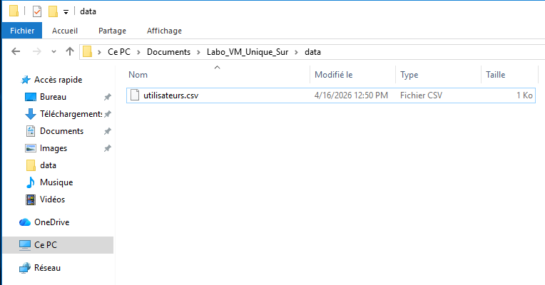
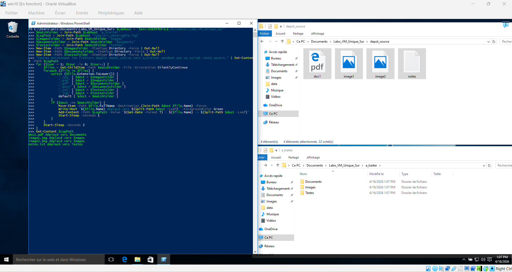

Équipe (3 maximum)

PowerShell — progressif, guidé puis autonome
Automatisation, fichiers, utilisateurs locaux et diagnostics réseau avec PowerShell
Dans ce labo, toute l’activité se fait sur une seule machine virtuelle Windows. Les tâches sont conçues pour être réalisables, sûres et progressives. Les parties 1 à 4 représentent 60 % de la note, la partie 5 représente 20 %, la partie 6 représente 10 % et le QCM final représente 10 %.
Table des matières
Objectifs du labo
- Préparer un environnement de travail sûr dans un dossier unique.
- Créer simplement des groupes et des utilisateurs locaux à partir d’un fichier CSV.
- Observer une vraie tâche d’automatisation pendant que le script tourne et capturer le résultat.
- Produire un diagnostic local exploitable sur la même machine virtuelle.
- Réaliser ensuite des tâches autonomes déjà basées sur des manipulations pratiquées en classe.
- Documenter clairement le travail réalisé et répondre à un QCM final.
Partie 1 — Démarrage, sécurité et préparation du labo (60 % avec les parties 2 à 4)
Contexte et règles
Ce labo est conçu pour une seule VM Windows. Toutes les manipulations restent dans un dossier de travail pédagogique. Les actions demandées sont sûres : création de dossiers, création d’utilisateurs locaux simples, tri de fichiers dans des dossiers de test, diagnostic réseau local, batch de lancement, recherche de doublons et archivage de livrables.
Préparer la structure du labo
Cette étape est entièrement guidée. Exécutez le bloc suivant dans PowerShell.
depot_source, depot_source2 et a_traiter serviront à l’automatisation observable. downloads_test et photos serviront plus tard aux tâches autonomes de tri et de recherche de doublons.Partie 2 — Bloc guidé : données du labo et documentation de départ (60 % avec les parties 1 à 4)
Créer le fichier utilisateurs.csv
Enregistrez ce fichier dans %USERPROFILE%\Documents\Labo_VM_Nom-Etudiant\data\utilisateurs.csv. Il servira à la création simple des comptes locaux et des groupes.
NomUser,Password,Groupe support1,P@ssw0rd123,Support support2,P@ssw0rd123,Support stag1,P@ssw0rd123,Stagiaires stag2,P@ssw0rd123,Stagiaires
Exemple de résultat attendu : fichier CSV visible dans l’Explorateur Windows avec le type et la taille affichés.

Préparer la documentation de départ
Créez dès maintenant un fichier README_TECHNIQUE.md dans le dossier rapport. Vous le compléterez à la fin du labo, mais il est préférable de préparer sa structure maintenant.
# README technique du labo VM unique ## 1. structure du dossier - expliquer le rôle de data, scripts, logs, rapport, archives, depot_source, depot_source2, a_traiter, downloads_test et photos ## 2. scripts guidés réalisés - creer_utilisateurs_groupes.ps1 - tri_observable.ps1 - diagnostic_vm.ps1 ## 3. scripts autonomes réalisés - recherche_doublons.ps1 - rangement_par_type.ps1 - lancer_creation.bat - lancer_diagnostic.bat ## 4. tests réellement effectués - utilisateurs créés - tri observable essayé deux fois - diagnostic généré - doublons vérifiés - rangement par type vérifié ## 5. difficultés et solutions - ... ## 6. fichiers remis - ...
Partie 3 — Bloc guidé : création locale des utilisateurs et groupes (60 % avec les parties 1 à 4)
Écrire puis exécuter le script de création
Enregistrez ce script dans scripts\creer_utilisateurs_groupes.ps1, puis exécutez-le dans PowerShell.
creation_utilisateurs.log.Partie 4 — Bloc guidé : automatisation observable et diagnostic local (60 % avec les parties 1 à 4)
Automatisation observable pendant l’exécution
Cette tâche doit permettre d’observer l’automatisation pendant l’exécution. Le script ci-dessous surveille le dossier a_traiter, puis range automatiquement les fichiers par type. Faites un premier essai avec depot_source, puis un deuxième essai avec depot_source2, afin d’observer le résultat sur place deux fois.
a_traiter. Faites un premier essai en copiant les fichiers de depot_source vers a_traiter, puis faites un deuxième essai avec depot_source2. Observez le tri automatique dans l’Explorateur Windows pendant les deux essais. Arrêtez le script seulement après les captures, avec Ctrl + C.Exemple de résultat attendu : écran partagé entre la console, le dépôt source et le dossier à traiter.

Produire un diagnostic local sûr sur la même VM
Le diagnostic suivant reste entièrement local et ne dépend d’aucune deuxième machine virtuelle.
Partie 5 — Tâches de recherche (20 %)
Consignes générales du bloc autonome
Dans cette partie, vous devez retrouver et appliquer la bonne méthode à partir des notions déjà pratiquées en classe. Les tâches demandées reprennent des manipulations déjà réalisables sur la machine virtuelle du labo.
Mini-défis à réaliser
Tâche autonome 1 — rechercher les doublons avec Get-FileHash
- Créer
scripts\recherche_doublons.ps1. - Le script doit analyser le dossier
photosdu labo. - Il doit produire un fichier
rapport\doublons.txtoù l’on voit clairement quels fichiers ont le même hash. - Utiliser
-WhatIfseulement si vous voulez simuler une suppression, mais aucune suppression n’est obligatoire ici.
Get-ChildItem "photos" -File -RecurseGet-FileHashGroup-Object HashWhere-Object { $_.Count -gt 1 }Out-String+Set-Content
Tâche autonome 2 — ranger automatiquement les fichiers par type
- Créer
scripts\rangement_par_type.ps1. - Le script doit traiter le dossier
downloads_test. - Il doit créer des sous-dossiers cohérents, puis y déplacer les fichiers selon leur extension.
- À la fin, le dossier
downloads_testdoit clairement montrer le rangement effectué.
$TargetFolderGet-ChildItem -Fileswitch ($file.Extension.ToLower())New-Item -ItemType DirectoryMove-Item
Tâche autonome 3 — créer deux lanceurs batch
- Créer
lancer_creation.batpour lancer le script de création des utilisateurs. - Créer
lancer_diagnostic.batpour lancer le script de diagnostic local. - Les deux fichiers doivent fonctionner même si le dossier du labo est déplacé.
powershell -ExecutionPolicy Bypass -File%~dp0pause
Tâche autonome 4 — préparer le dossier d’archives de remise
- Créer un sous-dossier de remise dans
archivesavec un nom explicite et horodaté. - Copier dans ce dossier au minimum :
README_TECHNIQUE.md,diagnostic_vm.txt,doublons.txtet les fichiers de log utiles. - Le résultat doit être facile à corriger et à relire.
New-ItemJoin-PathGet-Date -Format yyyyMMdd-HHmmCopy-ItemGet-ChildItem
Partie 6 — Documentation et bilan (10 %)
Compléter le README technique
Complétez réellement le fichier README_TECHNIQUE.md. Il doit être court, clair et exploitable. Il ne doit pas répéter mécaniquement les consignes du labo.
%~dp0 et deux bonnes pratiques de sécurité.Mini-recherche
.bat inconnu et expliquez-la en une ou deux phrases.
Bilan final
| Élément à vérifier | Preuve attendue | Case |
|---|---|---|
| Structure du dossier du labo | Dossier racine et sous-dossiers créés | |
| CSV du labo | utilisateurs.csv exact et lisible | |
| Création locale des comptes — terminal | Exécution du script dans PowerShell | |
| Création locale des comptes — journal | Fichier creation_utilisateurs.log bien rempli | |
| Automatisation observable | Script en cours d’exécution + fichiers rangés | |
| Diagnostic local | Rapport visible dans l’Explorateur Windows | |
| Tâches de recherche | Doublons + tri + batch + archives | |
| Documentation finale | README technique complété |
QCM de validation (10 %)
Répondez aux questions suivantes
1. Pourquoi le test Test-Connection 127.0.0.1 -Count 2 est-il adapté à ce labo ?
2. Quel est le rôle principal du fichier utilisateurs.csv dans ce labo ?
3. À quoi sert principalement %~dp0 dans un fichier batch ?
4. Quelle commande est la plus utile pour repérer des fichiers identiques par leur contenu réel ?
5. Quelle bonne pratique est correcte devant un fichier .bat inconnu ?
Grille d’évaluation
| Compétence | Critère | Ce qui est évalué | Échelle | /max |
|---|---|---|---|---|
| 1. Préparer les outils | 1.1 | Analyse de l’environnement de travail et du besoin | 0 / 1 / 3 / 4 / 5 | 5 |
| 1. Préparer les outils | 1.2 | Choix judicieux des outils, fichiers et commandes | 0 / 1 / 3 / 4 / 5 | 5 |
| 1. Préparer les outils | 1.3 | Préparation correcte du dossier, de la structure et des fichiers de départ | 0 / 1 / 3 / 4 / 5 | 5 |
| 2. Traduire la tâche | 2.1 | Rédaction correcte des scripts, commandes et fichiers batch | 0 / 3 / 6 / 9 / 12 | 12 |
| 2. Traduire la tâche | 2.2 | Respect de la méthode d’automatisation et enchaînement logique | 0 / 3 / 6 / 10 / 13 | 13 |
| 3. Effectuer des tests | 3.1 | Planification des essais demandés et méthode de vérification | 0 / 1 / 3 / 5 / 6 | 6 |
| 3. Effectuer des tests | 3.2 | Application rigoureuse des essais, captures et validations | 0 / 1 / 3 / 5 / 6 | 6 |
| 3. Effectuer des tests | 3.3 | Fonctionnement correct des scripts, journaux et résultats observés | 0 / 2 / 4 / 6 / 8 | 8 |
| 4. Procéder à l’automatisation | 4.1 | Exécution correcte des scripts ou configurations | 0 / 3 / 6 / 10 / 13 | 13 |
| 4. Procéder à l’automatisation | 4.2 | Efficience des tâches automatisées et qualité des résultats | 0 / 4 / 8 / 12 / 17 | 17 |
| 5. Rédiger la documentation | 5.1 | Choix pertinent de l’information à rédiger | 0 / 1 / 3 / 5 / 6 | 6 |
| 5. Rédiger la documentation | 5.2 | Notation claire du travail, réponses et lisibilité des traces | 0 / 1 / 2 / 3 / 4 | 4 |
| Total | Barème global : parties 1 à 4 = 60 %, partie 5 = 20 %, partie 6 = 10 %, QCM = 10 %. | 100 | ||
Exportation en PDF
Complétez d’abord les noms d’équipe, les captures et les réponses rédigées. Ensuite, utilisez le bouton ci-dessous pour imprimer ou exporter votre labo en PDF.